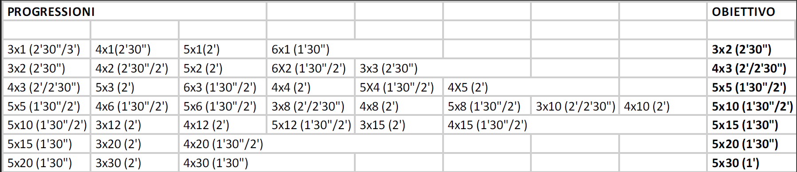

| ROAD TO |
|
Cosa e' il ROAD TO |
 |
| Il "Road To" ("strada verso") e' un percorso di allenamento mirato che ha l'obiettivo di portare l'atleta a raggiungere una skill specifica del calisthenics. Il road to e' un metodo di allenamento che consiste sostanzialmente nel programmare un percorso per raggiungere un obbiettivo prefissato. L'atleta ,in questo modo, risulta sempre stimolato e motivato nel raggiungere i sottoobbiettivi che lo porteranno a raggiungere, piano piano e con costanza, la fine. |

|
|
|---|
-2025- Calisthenics Italia© - Giuseppe Piccininno 3CI